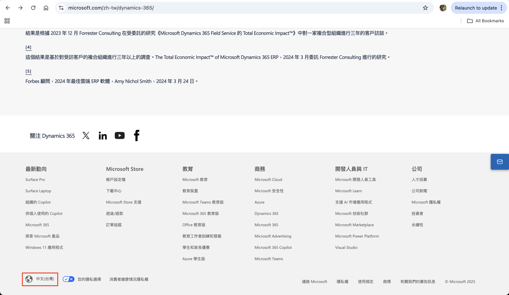
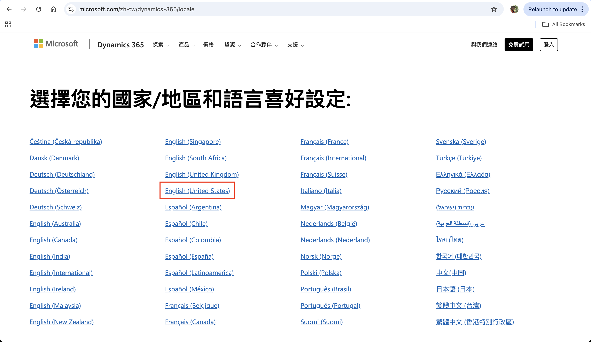
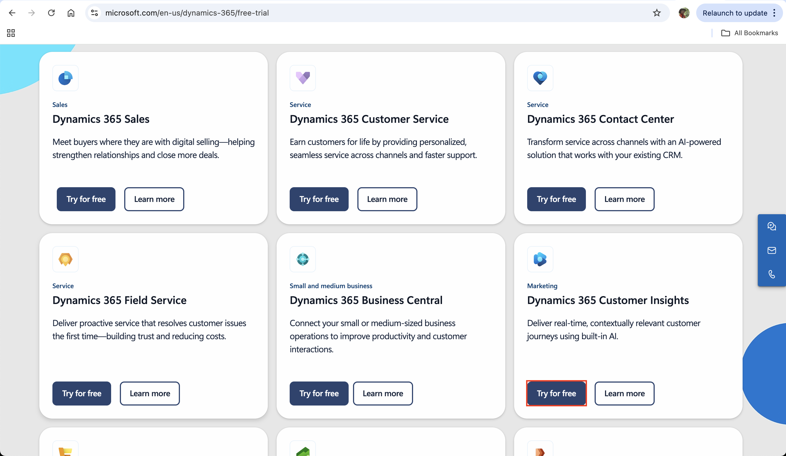
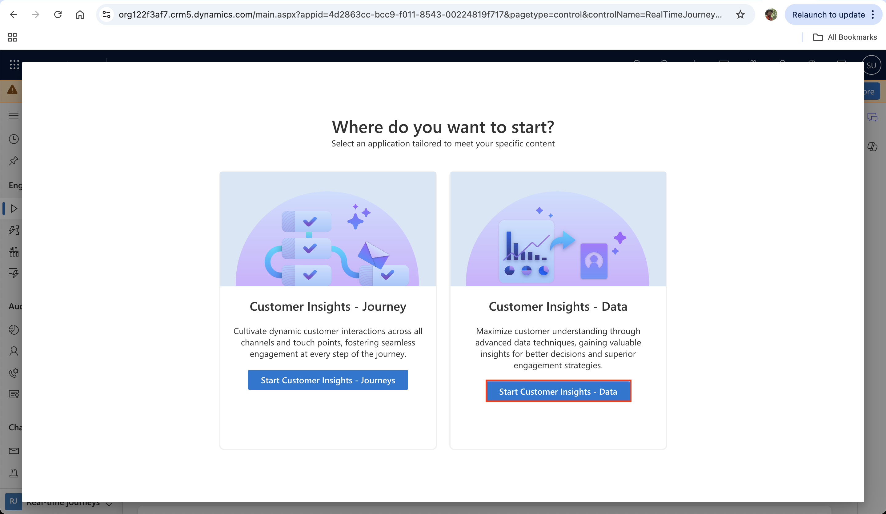
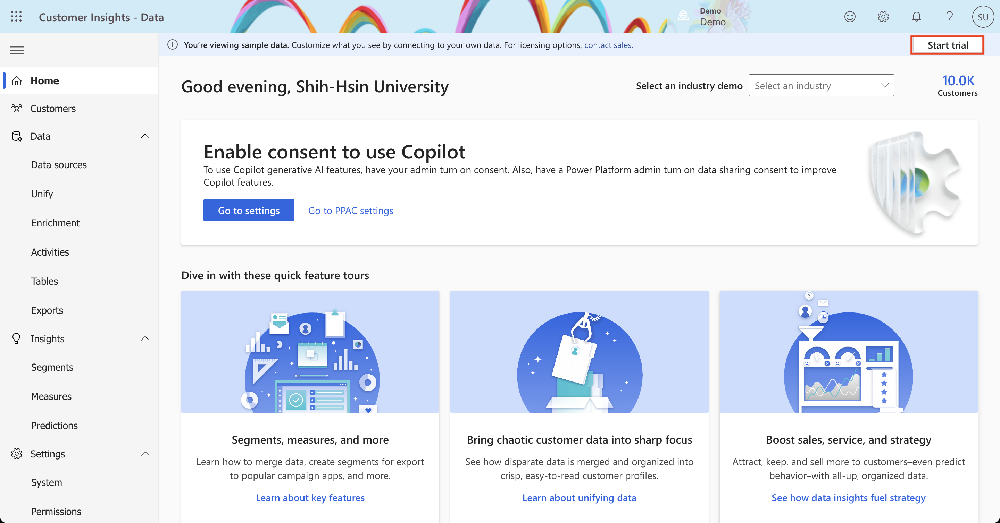

Lab 0: Set up environment
Module 1: Get started with Dynamics 365 Customer Insights - Data
This appendix contains step-by-step instructions to provision and configure a Dynamics 365 Customer Insights environment, including prerequisites.
WWL Tenants - Terms of Use
If you are being provided with a tenant as a part of an instructor-led training delivery. Please note that the tenant is made available for the purpose of supporting the hands-on labs in the instructor-led training. Tenants should not be shared or used for purposes outside of hands-on labs. The tenant used in this course is a trial tenant and cannot be used or accessed after the class is over and are not eligible for extension. Tenants must not be converted to a paid subscription. Tenants obtained as a part of this course remain the property of Microsoft Corporation and we reserve the right to obtain access and repossess at any time.
Exercise 1: Get a Dynamics 365 Customer Insights trial
Step 1: Dynamics 365 Customer Insights trial
- In a new browser tab, navigate to https://dynamics.microsoft.com/dynamics-365-free-trial. In the middle of the screen, you will see two buttons: one to see plans and pricing, the other to try for free. Select Try for free.

把網頁拉到最底下，點選紅色框框，把語言改成English(United States)

- Navigate to the Dynamics 365 Customer Insights box and select Try for free. Enter the provided M365 admin credential and select Start your free trial. (If prompted, leave region set to United States and enter 0123456789 for Phone number.) Select Submit.

- Select Launch Trial.
- On the welcome screen, select Start Customer Insights - Data. The Customer Insights - Data model-driven app will launch in a new tab. You now have both a Customer Insights - Journeys and a Customer Insights - Data trial environment.

- Enter United States for Country/region. Select Continue.
- Select Start trial from the notification banner. Wait for the trial to set up - it may take a few minutes. (If you get a pop-up that says Getting started, select Not now.)
